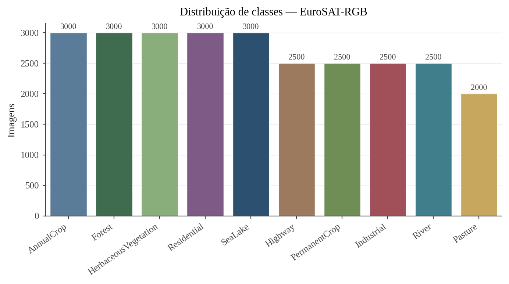
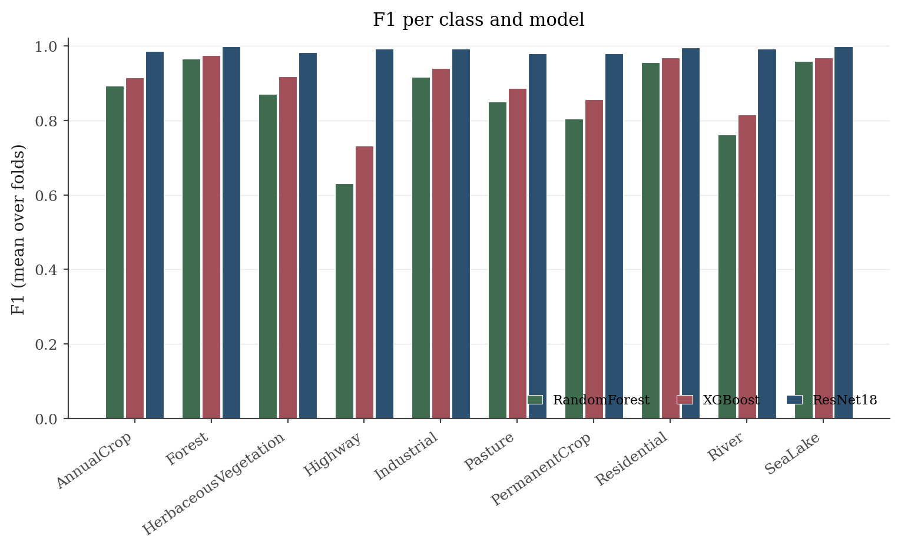
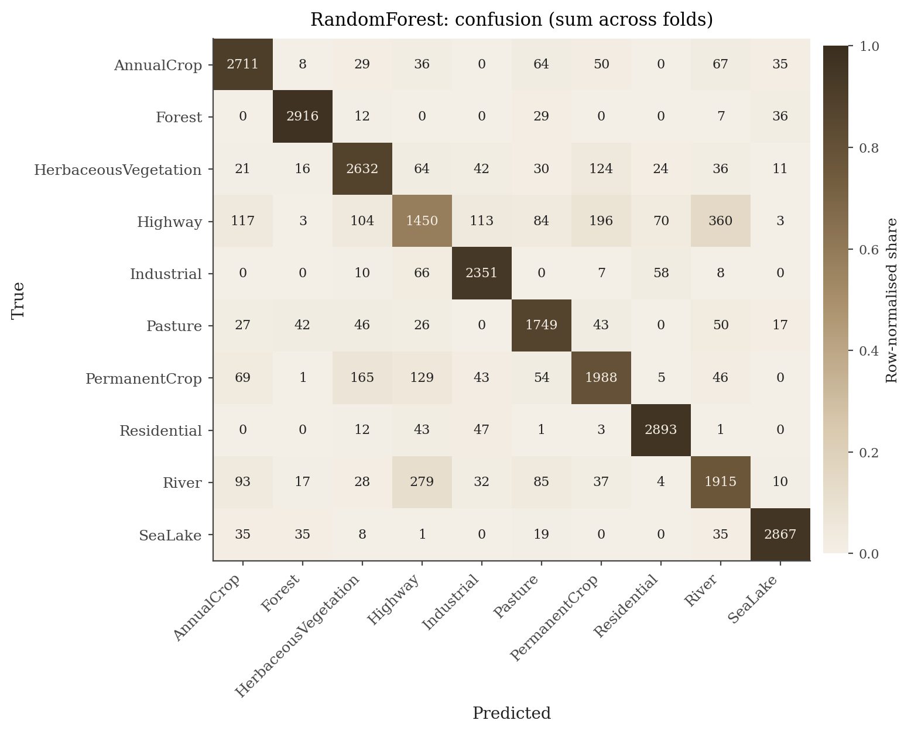
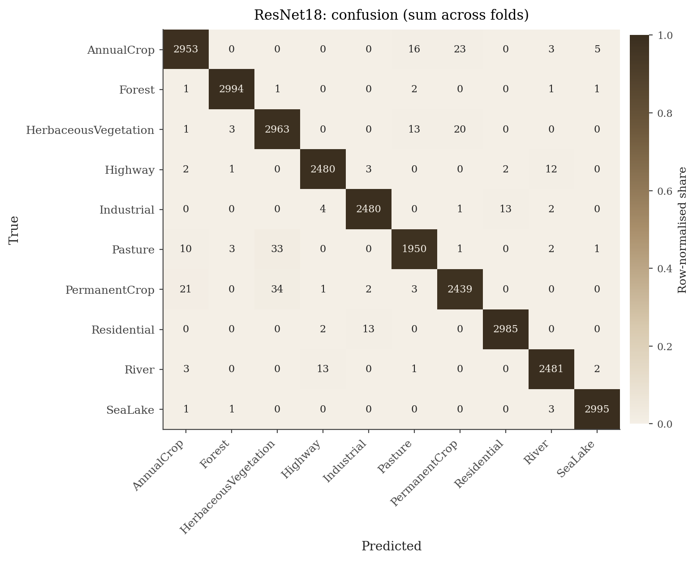
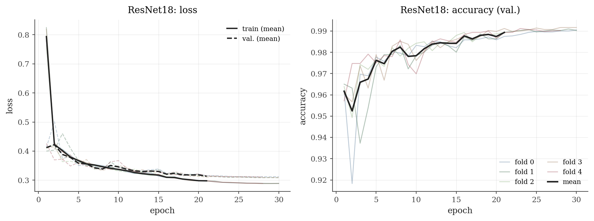
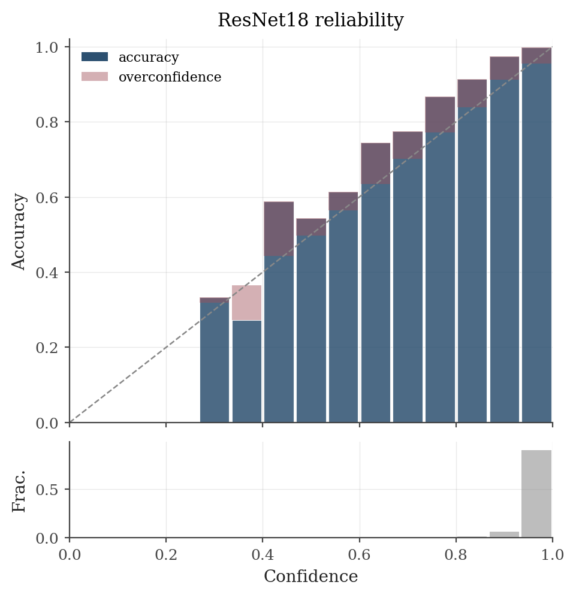
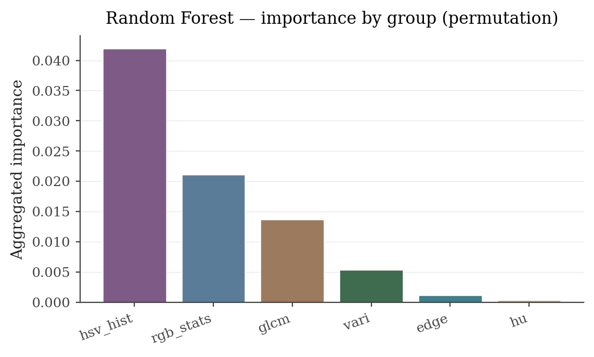
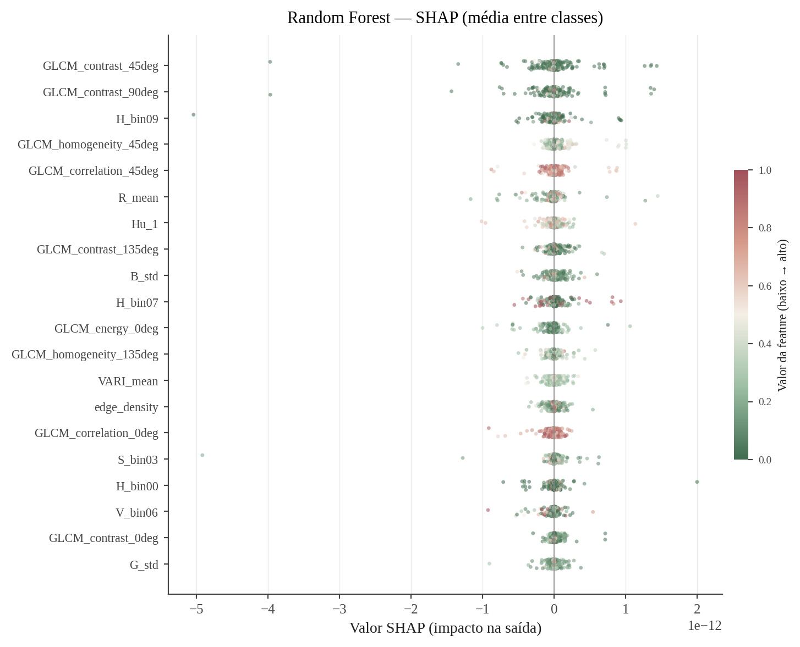
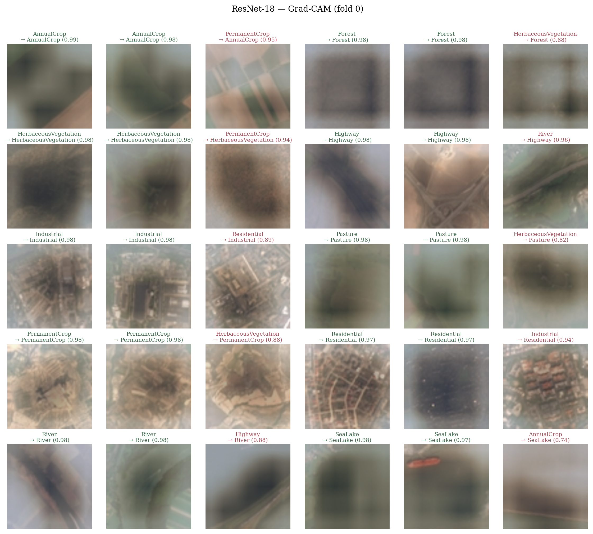
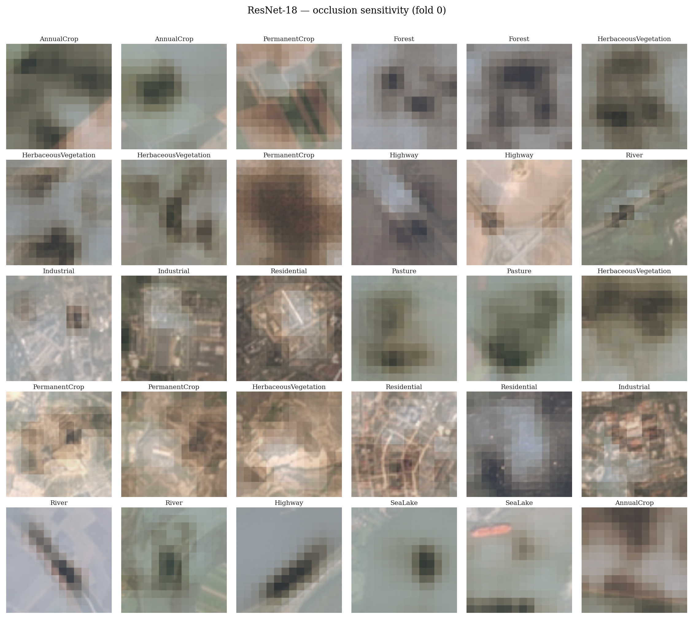

Este trabalho apresenta um benchmark de classificação de uso do solo sobre o conjunto de dados EuroSAT-RGB, derivado de imagens multiespectrais Sentinel-2. Três famílias de modelos foram avaliadas: Random Forest e XGBooste uma rede convolucional ResNet-18 pré-treinada no ImageNet. A avaliação segue um protocolo rigoroso de validação cruzada estratificada em 5 folds, com intervalos de confiança bootstrap (95 %) e testes de significância pareados (bootstrap pareado + McNemar com correção de Holm). A ResNet-18 alcança acurácia de 98,54 %, superando os modelos tradicionais de forma estatisticamente significativa. A análise de explicabilidade (importância de features, SHAP, Grad-CAM e sensibilidade por oclusão) revela que textura (GLCM) é o grupo de features mais informativo para os modelos tradicionais, enquanto a CNN explora padrões espaciais de alto nível para resolver classes visualmente difíceis como Highway e PermanentCrop. Os resultados demonstram o ganho expressivo obtido por representações aprendidas frente a features manuais em tarefas de teledetecção.
Palavras-chave: classificação de imagens de satélite, EuroSAT, Random Forest, XGBoost, ResNet, Grad-CAM, SHAP, validação cruzada, sensoriamento remoto.
O mapeamento automatizado do uso e cobertura do solo a partir de imagens orbitais é uma tarefa central em sensoriamento remoto e tem aplicações diretas em planejamento territorial, monitoramento agrícola, gestão de recursos hídricos e estudos climáticos. O avanço dos satélites de observação da Terra — em especial os da constelação Sentinel-2 do programa Copernicus — tornou disponível um fluxo contínuo de imagens multiespectrais de média resolução (10–60 m) com revisita de poucos dias, abrindo espaço para abordagens de aprendizado de máquina em larga escala.
O conjunto de dados EuroSAT (Helber et al., 2019) foi proposto precisamente para benchmarking dessas abordagens: 27 000 patches de 64 × 64 pixels organizados em 10 classes de uso do solo, cobrindo diferentes países europeus. O subconjunto RGB (três bandas visíveis) é amplamente adotado como ponto de partida por permitir o uso de modelos pré-treinados no ImageNet sem adaptação de canal.
Este trabalho tem dois objetivos principais. O primeiro é realizar uma análise exploratória do conjunto de dados (distribuição de classes, características espectrais e espaciais) para compreender a natureza do problema. O segundo é comparar três abordagens de classificação: Random Forest, XGBoost e ResNet-18; sob um protocolo experimental unificado, acompanhado de análise de explicabilidade para interpretar as decisões dos modelos.
O EuroSAT-RGB é composto por imagens RGB derivadas das bandas B04 (vermelho), B03 (verde) e B02 (azul) do satélite Sentinel-2, com resolução espacial de 10 m/pixel e tamanho fixo de 64 × 64 pixels por patch (cobrindo uma área de aproximadamente 0,41 km² cada). As 10 classes e a quantidade de amostras por classe são apresentadas na Tabela 1.
| # | Classe | N | % total |
|---|---|---|---|
| 0 | AnnualCrop | 3 000 | 11,1 % |
| 1 | Forest | 3 000 | 11,1 % |
| 2 | HerbaceousVegetation | 3 000 | 11,1 % |
| 3 | Highway | 2 500 | 9,3 % |
| 4 | Industrial | 2 500 | 9,3 % |
| 5 | Pasture | 2 000 | 7,4 % |
| 6 | PermanentCrop | 2 500 | 9,3 % |
| 7 | Residential | 3 000 | 11,1 % |
| 8 | River | 2 500 | 9,3 % |
| 9 | SeaLake | 3 000 | 11,1 % |
| Total | 27 000 | 100 % | |

O dataset apresenta leve desbalanceamento: Pasture é a classe menos representada (2 000 amostras, 7,4 %), ao passo que seis classes possuem o máximo de 3 000. A razão máxima entre classes é 1,5:1, portanto o desbalanceamento não exige reamostragem agressiva, mas justifica o uso de acurácia balanceada e F1-macro como métricas primárias.
As 10 classes podem ser agrupadas em três grandes categorias com características distintas:
O índice VARI (Visible Atmospherically Resistant Index, definido como (G − R) / (G + R − B)) foi utilizado como proxy de verdor, sendo capaz de separar vegetação densa de superfícies impermeáveis sem recorrer a bandas do infravermelho próximo.
As classes mais desafiadoras para modelos tradicionais são Highway e PermanentCrop: ambas compartilham padrões de linhas (estradas e fileiras de plantio) e resposta espectral intermediária, gerando confusão mútua e, respectivamente, com River e AnnualCrop.
O conjunto de dados foi dividido em 5 folds estratificados, garantindo proporção equivalente de cada classe. O mesmo particionamento é compartilhado por todos os modelos, permitindo testes de significância pareados. Em cada fold, o conjunto de treino corresponde a ~80 % das amostras e o de teste a ~20 % (~5 400 amostras).
As métricas reportadas são: acurácia global, acurácia balanceada, F1-macro, coeficiente Kappa de Cohen, top-2 accuracy, AUC-ROC macro e ECE (Expected Calibration Error). Os intervalos de confiança a 95 % foram calculados por bootstrap com 2 000 iterações. As comparações par-a-par utilizam bootstrap pareado e teste de McNemar, ambos com correção de Holm.
Para os modelos tradicionais, cada imagem 64 × 64 RGB é representada por um vetor de 89 features escalares, organizadas em seis grupos:
Random Forest (RF): 500 árvores, profundidade irrestrita, pesos de classe balanceados. 2 264 252 parâmetros (nós e folhas).
XGBoost (XGB): 800 estimadores máximos, profundidade 8, taxa de aprendizado 0,05, subsampling de 90 %, parada antecipada em 50 rodadas sem melhora (método hist). 381 árvores ativas após a parada antecipada.
ResNet-18: Arquitetura pré-treinada no ImageNet com cabeça substituída por 10 saídas. Imagens redimensionadas para 224 × 224. Treinamento por 30 épocas com Adam (lr = 3 × 10−4, weight decay = 10−4), 2 épocas de warmup e label smoothing = 0,05. 11 181 642 parâmetros.
Para os modelos tradicionais: importância de Gini nativa, importância por permutação (8 repetições) e valores SHAP (TreeExplainer, máximo 1 500 amostras). Para a ResNet-18: mapas Grad-CAM e mapas de sensibilidade por oclusão (janela 32 × 32, passo 16) para dois exemplos por classe.
A análise dos histogramas HSV revela padrões espectrais característicos por grupo. Classes de vegetação concentram-se na faixa verde-amarelada (H ≈ 0,25–0,35), enquanto corpos hídricos apresentam distribuição quase uniforme com leve excesso de tons azulados. SeaLake apresenta baixa saturação (superfície homogênea); classes construídas (Industrial, Residential) mostram distribuições mais espalhadas em saturação e valor. A separabilidade espectral entre HerbaceousVegetation, Pasture e AnnualCrop é limitada no espaço RGB/HSV — todas exibem resposta semelhante nas bandas visíveis, delegando a distinção para textura e contexto espacial.
As features GLCM revelam contrastes relevantes. Forest e SeaLake apresentam alta homogeneidade (textura suave), enquanto Residential e Industrial apresentam baixa homogeneidade (estruturas artificiais heterogêneas). Highway exibe alto contraste local (bordas nítidas de vias sobre fundo de vegetação ou solo), o que paradoxalmente dificulta sua separação de PermanentCrop — que também exibe linhas regulares de plantio. A energia GLCM é alta em classes uniformes (Forest, SeaLake) e baixa em áreas urbanas e agrícolas complexas.
O VARI médio distingue bem dois grupos extremos: vegetação densa (Forest, HerbaceousVegetation: VARI ≈ 0,20–0,35) e superfícies construídas ou hídricas (Industrial, SeaLake, River: VARI próximo de zero ou negativo). Classes agrícolas (AnnualCrop, PermanentCrop, Pasture) ocupam valores intermediários, com alta variância devida à mistura de vegetação e solo exposto conforme a fase do ciclo fenológico.
| Métrica | Random Forest | XGBoost | ResNet-18 |
|---|---|---|---|
| Acurácia | 88,34 ± 0,11 % | 90,81 ± 0,26 % | 98,54 ± 0,58 % |
| Acurácia balanceada | 87,73 ± 0,06 % | 90,34 ± 0,25 % | 98,47 ± 0,62 % |
| F1-macro | 87,57 ± 0,08 % | 90,27 ± 0,25 % | 98,48 ± 0,61 % |
| Kappa de Cohen | 87,02 ± 0,12 % | 89,77 ± 0,29 % | 98,37 ± 0,64 % |
| Top-2 Acurácia | 96,35 ± 0,32 % | 97,54 ± 0,21 % | 99,83 ± 0,11 % |
| AUC-ROC macro | 99,01 ± 0,04 % | 99,34 ± 0,05 % | 99,95 ± 0,02 % |
| ECE ↓ | 10,22 ± 0,18 % | 2,31 ± 0,14 % | 4,55 ± 0,12 % |
A ResNet-18 domina em todas as métricas de acurácia discriminativa, obtendo F1-macro de 98,48 % — uma vantagem de +10,91 p.p. sobre o RF e +8,21 p.p. sobre o XGBoost. A AUC-ROC macro próxima de 100 % indica separabilidade quase perfeita no espaço de probabilidades.
O ECE merece atenção especial: o XGBoost é o modelo melhor calibrado (ECE = 2,31 %), resultado surpreendente dado que a ResNet-18 aplica label smoothing. O RF apresenta o pior ECE (10,22 %), comum em florestas aleatórias que tendem a produzir probabilidades extremas via votação majoritária. A ResNet-18 apresenta ECE moderado (4,55 %) — as previsões corretas de alta confiança compensam, mas não eliminam, a sobre/subconfiança residual.
| Par A | Par B | Δ Acurácia (A − B) | p McNemar (Holm) | p Bootstrap (Holm) |
|---|---|---|---|---|
| RandomForest | XGBoost | −2,47 p.p. | 6,7 × 10−71 | 0,0 |
| RandomForest | ResNet18 | −10,20 p.p. | 0,0 | 0,0 |
| XGBoost | ResNet18 | −7,73 p.p. | 0,0 | 0,0 |
Os p-valores nulos no bootstrap indicam que, em nenhuma das 2 000 reamostras, o modelo menos acurado superou o mais acurado. Todas as diferenças são robustas e não atribuíveis a variância amostral.
| Classe | Random Forest | XGBoost | ResNet-18 |
|---|---|---|---|
| AnnualCrop | 89,43 % | 91,37 % | 97,88 % |
| Forest | 97,69 % | 98,14 % | 99,50 % |
| HerbaceousVegetation | 88,41 % | 91,81 % | 97,69 % |
| Highway | 66,15 % | 73,63 % | 98,60 % |
| Industrial | 91,98 % | 93,49 % | 99,14 % |
| Pasture | 86,53 % | 89,44 % | 97,22 % |
| PermanentCrop | 81,67 % | 85,79 % | 97,20 % |
| Residential | 95,69 % | 96,62 % | 99,52 % |
| River | 80,25 % | 84,10 % | 98,40 % |
| SeaLake | 97,94 % | 98,33 % | 99,65 % |

Dois padrões se destacam. Primeiro, Highway é a classe mais difícil para modelos tradicionais: o RF atinge apenas F1 = 66,15 % e o XGBoost 73,63 % — um gap de 25–32 p.p. em relação à ResNet-18 (98,60 %). Features GLCM e HSV não capturam a geometria linear de estrada em escala de patch. Segundo, Forest e SeaLake são as classes mais fáceis: todos os modelos obtêm F1 > 97 %, refletindo alta separabilidade espectral e de textura.




| Grupo | Gini (builtin) | Permutação | SHAP |
|---|---|---|---|
| GLCM (textura) | 47,0 % | 36,8 % | 49,1 % |
| HSV (histograma) | 27,1 % | 59,0 % | 26,2 % |
| RGB (estatísticas) | 16,1 % | 18,7 % | 16,0 % |
| VARI | 3,6 % | 8,0 % | 4,7 % |
| Momentos de Hu | 4,2 % | 3,0 % | 2,8 % |
| Borda (Canny) | 1,9 % | 1,5 % | 2,3 % |


As features de textura GLCM são consistentemente as mais importantes: 47 % pela importância de Gini e 49 % pelo SHAP. A correlação GLCM nos quatro ângulos captura o grau de regularidade da superfície, discriminando vegetação homogênea de estruturas artificiais e cultivos em fileiras. A importância por permutação coloca histogramas HSV em primeiro lugar (59 %), divergência esperada quando features correlacionadas são avaliadas como grupo. O VARI agrega apenas 3,6–4,7 % — coerente com a ausência da banda NIR no conjunto RGB.


Os mapas Grad-CAM demonstram que a ResNet-18 foca corretamente nas regiões de interesse: sobre os pixels da via em Highway, sobre o dossel em Forest, e sobre o canal em River. Este comportamento explica o salto de F1 de 73 % (XGBoost) para 98,6 % em Highway — features GLCM e HSV não conseguem capturar a geometria linear de uma estrada em escala de patch. Os mapas de oclusão confirmam os mesmos padrões, reforçando a coerência das ativações da rede com o conteúdo visual diagnóstico de cada classe.
A diferença de ~10 p.p. de acurácia entre a CNN e os modelos tradicionais deve ser interpretada no contexto de custo-benefício. O RF treina em menos de 4 s por fold e o XGBoost em menos de 14 s, ambos em CPU; a ResNet-18 demanda ~9,6 min por fold em GPU. Para aplicações com orçamento computacional restrito ou onde a interpretabilidade direta das features é necessária, os modelos tradicionais oferecem uma alternativa viável com 88–91 % de acurácia.
O gap de desempenho é particularmente acentuado em Highway (+32 p.p. para a CNN), evidenciando uma limitação fundamental das features artesanais baseadas em estatísticas globais de patch: elas perdem informação espacial de localização (onde está a borda, não apenas quantas bordas existem).
O XGBoost supera o RF em todas as métricas (+2,47 p.p. de acurácia), com diferença estatisticamente significativa. O ganho relativo é maior nas classes de difícil separação: Highway (+7,5 p.p.), PermanentCrop (+4,1 p.p.) e River (+3,9 p.p.). Note-se que o XGBoost ativo possui apenas 381 árvores (após parada antecipada) contra 500 do RF, sugerindo que a qualidade das divisões (gradiente de segunda ordem, profundidade controlada) supera o efeito da quantidade.
O XGBoost ser o modelo melhor calibrado (ECE = 2,31 %) é contra-intuitivo. Uma hipótese é que a parada antecipada evita o regime de alta confiança característico do overfitting leve — o modelo não aprende a produzir probabilidades extremas, resultando em distribuições mais temperadas. O ECE elevado do RF (10,22 %) é esperado: a média de votos binários de 500 árvores produz probabilidades concentradas em 0 ou 1. Técnicas como isotonic regression ou Platt scaling poderiam corrigir esse comportamento sem custo preditivo.
Este trabalho apresentou um benchmark comparativo de três abordagens de classificação de uso do solo sobre o EuroSAT-RGB, com análise exploratória do conjunto de dados e estudo de explicabilidade. Os principais achados são:
Os resultados reforçam que, para classificação de imagens de satélite com patches de 64 × 64 pixels no domínio RGB, a aprendizagem de representações por CNN oferece ganhos substanciais frente a pipelines de features artesanais, ao custo de maior demanda computacional e menor interpretabilidade direta. Em contextos onde custo computacional, velocidade de inferência ou auditabilidade são relevantes, XGBoost com features GLCM + HSV representa uma solução competitiva.